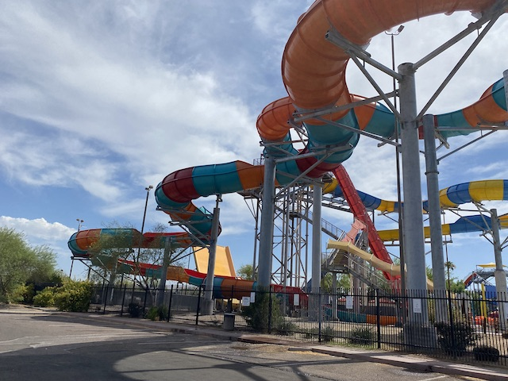
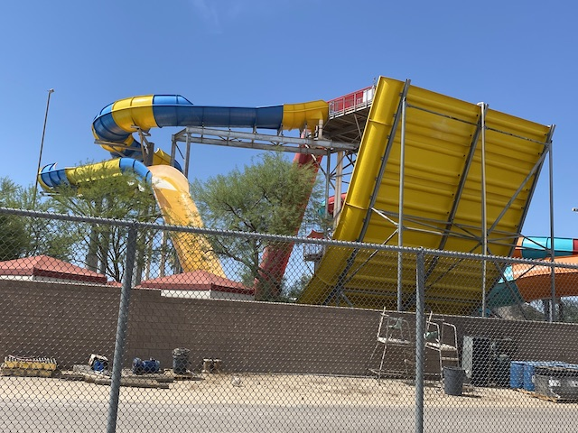
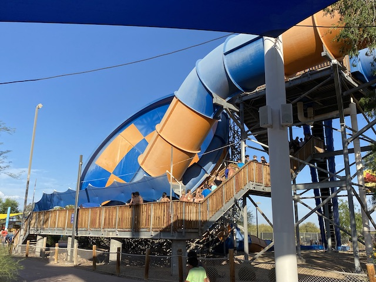
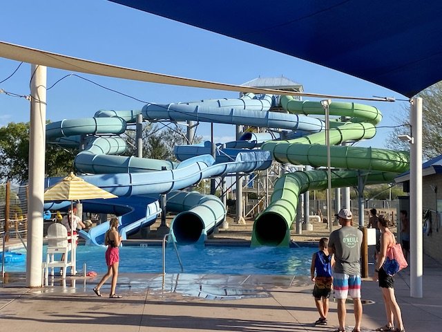

| |
Six Flags Hurricane Harbor (Phoenix) Review

Six Flags Hurricane Harbor (Phoenix) is a fun water park. I'm not gonna lie and say that this is some special water park with all sorts of unique slides and you have to go out of your way to check this place out. No. That is not the case. There is no slide here that you can not find at other similar water parks across the country. But at the same time, it genuinely is a very fun water park with a really good water slide collection. I stopped at this place because I was passing through Phoenix, needed something fun to do, it was 113 degrees, and I could get in for free thanks to my Six Flags season pass. And.....I had a really fun time there. All of the slides that they had were pretty good, with some solid staples, as well as a few sleeper hits. Would I recommend going out of your way for this water park? No. You can find similar slides at water parks all over the country, and no water slide here truly stands out. But at the same time, if you're a Phoenix local, or passing by and have a Six Flags season pass, stop on by. Its a fun water park with a decent amount of fun slides to experience.
The Major Waterslides
There is a link to a review of all the Major Waterslides at Six Flags Hurricane Harbor (Phoenix).
Bahama Blaster Review

Big Kahuna Review

Mammoth Falls Review

Tornado

Typhoon Twister Review

Wahoo Racers

All the Other Waterslides
Here are the reviews of all the other water slides at Six Flags Hurricane Harbor. And.....there's only one slide I really want to discuss. Bonzai Pipeline. And if you look at it, it looks fun. But....it doesn't look like anything special. That's where this slide gets you! I honestly was SHOCKED at just how much I liked this slide. It's a fun twisty mess in the dark that goes super fast, and even has a nice little pop of airtime in the middle of it that really caught me off guard. I honest to god, think it just might be my 2nd favorite slide in the park. Hard to choose between this, Mammoth Falls, and Typhoon Twister. But just the sheer fact that this competes with them at all should be a testament to how impressed I was with this slide. Really wish I got rerides on this slide. Only reason it didn't get its own review is because it doesn't look so flashy. And that's the only slide I rode that doesn't have its own review. I know there's some generic slides in the same complex as Typhoon Twister. Maybe those would've surprised me as well had I checked them out. There's also a bunch of kiddy slides if you're visiting with young kids.

I'm serious! Don't miss this slide! It'll be far better than you think!
Dining
I never ate at Six Flags Hurricane Harbor (Phoenix).
Theming and Other Attractions
Here are the reviews of all the other stuff at Six Flags Hurricane Harbor (Phoenix(. Well, as for theming, there's not much. Sure, there's a few things here and there. A couple of tropical theming, including a dead plastic shark. Very similar to the theming you'd find at other Six Flags Hurricane Harbors. But for the most part, it's pretty bare. But that's OK. Most water parks aren't exactly well themed. As for other things to do, there's just the standard water park staples. A lazy river and a wave pool. Fun, but nothing too crazy or special.
In Conclusion
Six Flags Hurricane Harbor (Phoenix) is a pretty good water park. It has a pretty good collection of slides. I'm a big fan of Bahama Blasters. Love the idea of dueling water coasters. Not to mention all the other cool slides that the park has. They've got a Tube Toilet Bowl, a Family Raft Slide, a Half Pipe, a Tornado, a Helix Mat Racer, and I'm serious about Bonzai Pipelines being better than you expect. Yeah. Nothing about this place screams "GO OUT OF YOUR WAY AND MAKE YOUR WAY TO SIX FLAGS HURRICANE HARBOR IN PHOENIX!!!". No. It's good. But not that good. But for what it is, it genuinely is a really cool water park. I think this is a good thing for Phoenix locals to have as its a solid water park. And hey. If you have a Six Flags pass, you get in for free. I'm certainly glad I visited and had a ton of fun at this small little water park. I wish them the best of luck and hope they do well.
Tips
*Do all the major slides here.
*Stay cool! It gets HOT in Phoenix, and it's only gonna get worse thanks to climate change!
*Have Fun!!!
Location
Phoenix, Arizona, U.S.A
Last Day Visited
June 10, 2022
I don't have a Six Flags Hurricane Harbor (Phoenix) video as getting water park footage is a nightmare. Especially at a water park like this, it's not happening.
Complete Update List
2022
New Mexico 2022
Here's a link to the parks website.
Home
|